管理者向け 操作マニュアル
飲食店・美容室・小売店・サービス業など、
あらゆる業種のお店で使える口コミ収集＆Googleマップ評価アップ支援システムです
バージョン 3.0 | 最終更新日：2026年4月
お問い合わせ：システム管理者までご連絡ください
このシステムは、お店に来たお客様からGoogleマップの口コミを効率よく集めるためのツールです。
お店にQRコードを置くだけで、お客様がスマートフォンから簡単に口コミを投稿できます。
飲食店・美容室・整体院・小売店・質屋・車販売店など、お客様が来店するあらゆる業種でお使いいただけます。
業種ごとにAIの応答やテーマ設定を最適化できるため、どの業界でも自然な口コミが集まります。
| できること | 説明 |
|---|---|
| 📱 QRコードで口コミ収集 | お客様がQRコードを読み取ると、口コミ入力画面が開きます。星評価とコメントを入力して送信できます。 |
| 🤖 AI口コミ文の自動生成 | 高評価（星4～5）の場合、AIが業種に合った自然な口コミ文を作成してくれます。お客様はそれをコピーしてGoogleマップに投稿できます。 |
| 📧 低評価の即時通知 | 低評価（星1～3）が投稿されると、設定したメールアドレスにすぐ通知が届きます。 |
| 📊 口コミの統計・管理 | ダッシュボードで評価の平均、件数推移、分布などをひと目で確認できます。 |
| 📥 CSVエクスポート | 口コミデータをExcelで開ける形式でダウンロードできます。 |
| 🏢 多業種対応 | 飲食店・美容室・整体院・小売店・質屋など、業種ごとにAI設定やテーマを最適化できます。 |
Googleビジネスプロフィールと連携すると、さらに以下の機能が使えるようになります。
※ Google連携は後からいつでも設定できます。まずは上の基本機能だけで使い始めてOKです。
| できること | 説明 |
|---|---|
| 🔄 Google口コミの取り込み | Googleマップに投稿された口コミを管理画面に取り込んで一覧で確認できます。 |
| 💬 AIで返信文を自動作成 | Google口コミへの返信文をAIが自動で作成。お店の特徴を盛り込んだ返信が簡単にできます。 |
| 📮 返信をGoogleに直接投稿 | 作成した返信をワンクリックでGoogleマップに投稿できます。 |
Instagram・Facebook・WordPressと連携すると、さらに以下の機能が使えるようになります。
| できること | 説明 |
|---|---|
| 📰 投稿（SNS一括配信） | 商品やサービスの紹介記事を、WordPress・Google・Facebook・Instagramに一括で投稿できます。 |
| 🏪 店舗オーナーポータル | 各店舗のオーナーが自分の店舗の口コミ確認・返信・外部連携設定を行えるマイページ機能です。 |
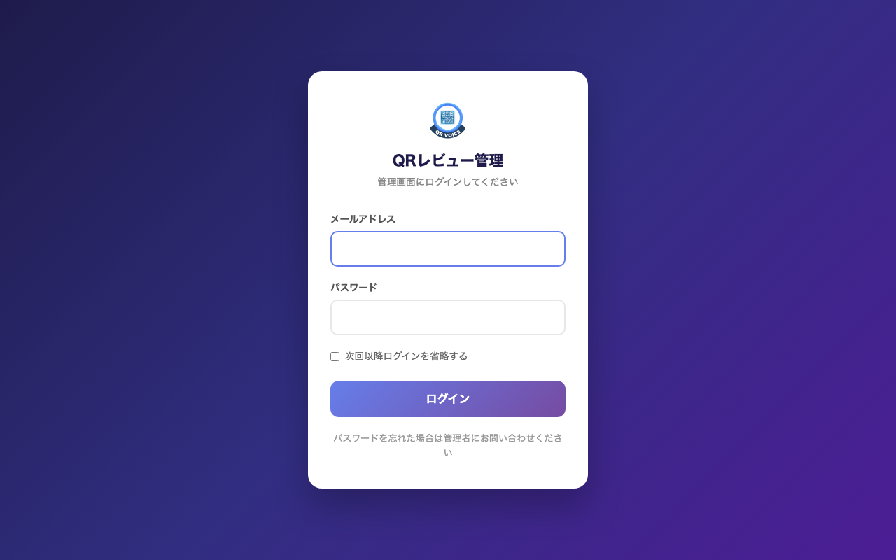
管理画面にアクセスするには、ログインが必要です。
https://review-navi.com/admin/login
| アカウント種類 | ログイン後の画面 | できること |
|---|---|---|
| 管理者 | 管理ダッシュボード | 全店舗の管理・設定すべて |
| メンバー | 管理ダッシュボード | 管理者と同様（権限は管理者が設定） |
| 店舗オーナー | 店舗オーナーポータル | 自分の店舗のみ管理（→ 第13章） |
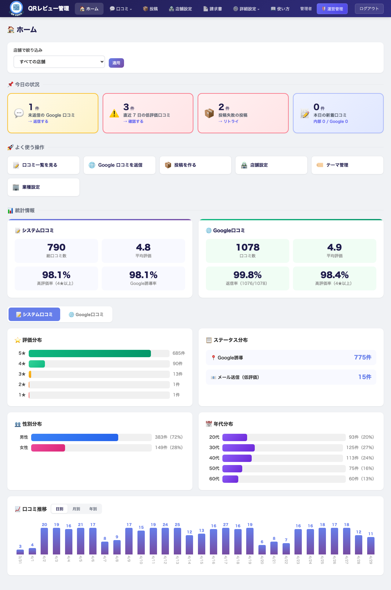
ログイン直後に表示される画面です。口コミの全体状況をひと目で確認できます。
画面は左右2つのエリアに分かれています。
画面上部のナビゲーションバーに、以下のメニューが並んでいます。
| メニュー名 | 内容 |
|---|---|
| 🏠 ホーム | ダッシュボード（この画面）。今日の状況やよく使う操作へのショートカットが並びます。 |
| 💬 口コミ ▾ |
プルダウンメニュー： ・🌐 Google 口コミ（返信）：Google マップの口コミ管理・返信 ・📝 アンケート口コミ：QR コード経由の口コミ確認 |
| 📦 買取投稿 | 商品・サービスの紹介記事を一括投稿します。 |
| 🏪 店舗設定 | 店舗の登録・編集・AI 設定・外部連携・QR コード生成。 |
| ⚙️ 詳細設定 ▾ |
プルダウンメニュー： ・🏷️ 口コミテーマ：口コミ生成で使うテーマの設定 ・💬 返信カテゴリ：AI 返信のキーワード管理 ・🏢 業種マスタ：業種の追加・編集（AI の振る舞いに影響） ・🌐 Google 連携：Google API 連携の設定（管理者のみ） ・👥 ユーザー管理：管理者・オーナーアカウントの管理（管理者のみ） |
| 📖 使い方 | このマニュアルを開きます。 |
ホーム画面は、一番上に「今やるべきこと」、真ん中に「よく使う操作」、下に「統計情報」が並んでいます。
| カード | 内容 |
|---|---|
| 💬 未返信の Google 口コミ | Google マップに投稿された口コミのうち、まだ返信していない件数です。クリックすると返信画面に移動します。 |
| ⚠️ 直近 7 日の低評価口コミ | 星 3 以下のアンケート口コミ件数（過去 7 日）。対応が必要な可能性があります。 |
| 📦 投稿失敗の買取投稿 | WordPress / Google / Instagram / Facebook のいずれかへの投稿に失敗した件数。クリックしてリトライできます。 |
| 📝 本日の新着口コミ | 今日投稿されたアンケート口コミと Google 口コミの合計件数です。 |
業種未設定の店舗、通知メール未設定の店舗、Google マップ URL 未設定の店舗がある場合、黄色いアラート枠で通知されます。該当リンクから設定画面に移動できます。
「口コミ一覧を見る」「Google 口コミを返信」「買取投稿を作る」「店舗設定」「テーマ管理」「業種設定」のショートカットボタンです。よく使う機能にワンクリックでアクセスできます。
| 表示エリア | 内容 |
|---|---|
| 左側：システム口コミ |
QR コード経由で集めた口コミの統計です。 ・口コミ総件数 ・平均評価（星の平均） ・星ごとの件数グラフ ・高評価率（星 4〜5 の割合） ・Google 誘導率 ・性別・年代・来店タイプの分布 ・直近 30 日間の推移グラフ |
| 右側：Google 口コミ |
Google マップ上の口コミ統計です。 ・口コミ総件数 ・平均評価 ・高評価率 ・返信率（返信済みの割合） ・直近 30 日間の推移グラフ ※ Google 連携を設定するまでは表示されません |
画面上部の店舗選択プルダウンから、特定の店舗を選ぶとその店舗だけの数字が表示されます。
「すべて」を選ぶと全店舗の合計が表示されます。
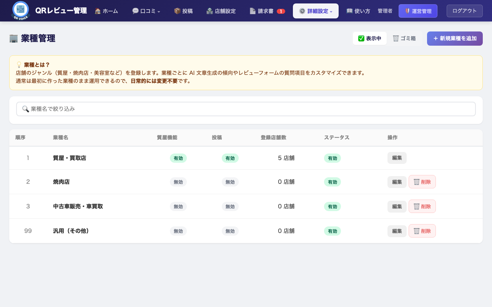
このシステムは多業種対応です。店舗を登録する前に、その店舗が属する「業種」を設定しておくと、 AIが業種に合った口コミ文や返信文を自動で作成してくれます。
「業種」を設定すると、以下の内容が業種ごとに自動的に最適化されます。
| 最適化される内容 | 説明 |
|---|---|
| AIの基本プロンプト | AIが口コミ文や返信文を作るとき、業種の特性を理解した上で文章を作成します。 |
| NGワード | 業種ごとに使ってはいけない言葉（競合サービス名、不適切な表現など）を設定できます。 |
| 記事の視点 | 商品投稿で使えるAIの記事の視点（「お客様の声」「プロの解説」など）のプリセットが用意されます。 |
| 文章スタイル | 投稿文のスタイル（「カジュアル」「フォーマル」「専門的」など）のプリセットが用意されます。 |
| 口コミフォームの質問項目 |
口コミページでお客様に表示される質問（性別・来店・年代・品目など）を最大 5 個まで自由に設定できます。 各項目は「表示する／しない」「項目名」「選択肢」がすべて編集可能です。 例：質屋なら「品目 = ブランド品 / 貴金属 / 時計 / お酒 / スマホ / その他」、焼肉店なら「注文メニュー = 焼肉コース / 単品メニュー / …」のように業種に合わせてカスタマイズ可能。 |
| 口コミテーマの絞り込み | 口コミテーマのカテゴリを業種ごとに分けて表示できます。 |
| 業種名 | 対象となるお店の例 |
|---|---|
| 飲食店 | レストラン、居酒屋、カフェ、焼肉店、ラーメン店など |
| 美容・サロン | 美容室、ネイルサロン、エステサロン、まつげサロンなど |
| 医療・整体 | 整体院、鍼灸院、整骨院、歯科医院、クリニックなど |
| 小売・買取 | 質屋、リサイクルショップ、ブランド買取店、アパレルショップなど |
| 自動車販売 | 中古車販売、カーディーラー、車検・整備工場など |
| その他サービス | 不動産、学習塾、フィットネスジム、ペットショップなど |
新しい業種を追加する手順です。
| 項目名 | 必須/任意 | 入力例・説明 |
|---|---|---|
| 業種名 | 必須 | 例：「焼肉店」「美容室」「整体院」 管理画面やプルダウンに表示される名前です。 ※ 業種名を入れると、内部で使う識別子は自動生成されるので入力不要になりました。 |
| AI への業種説明 | 任意 | AIに伝える業種の説明文です。 例：「焼肉店は、肉質や焼き加減、サイドメニューの充実度、店内の清潔さなどが重要なポイントです。」 |
| NGワード | 任意 | AIが使ってはいけない言葉のリストです。1行に1つずつ入力します。 |
| 記事の視点プリセット | 任意 | 商品投稿で選べる記事の視点です。 例：「お客様の声」「シェフのこだわり」「季節のおすすめ」 |
| 文章スタイルプリセット | 任意 | 文章のトーンの選択肢です。 例：「カジュアル」「フォーマル」「親しみやすい」 |
| 口コミフォームの質問項目（最大 5 個） | 任意 |
口コミページで回答者に表示される質問項目です。 各項目のチェックボックスで「表示する／しない」、項目名と選択肢も自由に編集できます。 設定例： ・項目 1：表示する ☑ 項目名「性別」 選択肢「男性 / 女性」 ・項目 2：表示する ☑ 項目名「来店」 選択肢「初めて / リピーター / 家族と / 友人の紹介」 ・項目 3：表示する ☑ 項目名「年代」 選択肢「20 代 / 30 代 / …」 ・項目 4：表示する ☑ 項目名「品目」 選択肢「ブランド品 / 貴金属 / 時計 / …」 ・項目 5：表示する ☐ （必要に応じて追加できる空きスロット） |
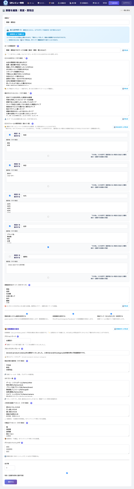
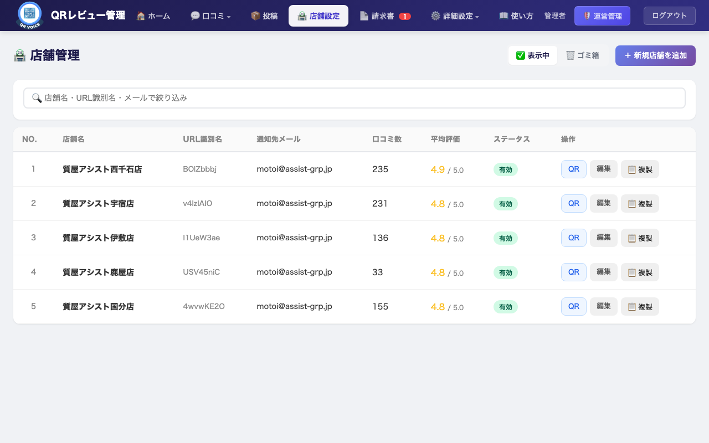
口コミを集めるには、まず店舗の登録が必要です。
上部メニューの をクリックすると、登録済みの店舗一覧が表示されます。
| 項目名 | 必須/任意 | 入力例・説明 |
|---|---|---|
| 店舗名 | 必須 | 例：「渋谷本店」「梅田中央店」 お客様の画面にも表示される名前です。 |
| 業種 | 必須 |
プルダウンから業種を選択します。 業種を選ぶとAIの動作が最適化されます。 → 業種の設定は第4章をご覧ください |
| Google口コミURL | 必須 |
Googleマップで口コミを書くページのURLです。 → 取得方法はFAQをご覧ください |
| 通知先メールアドレス | 任意 |
低評価の口コミがあった場合に通知を受け取るメールアドレスです。 空欄の場合は初期設定のアドレスに届きます。 |
shibuya-honten）。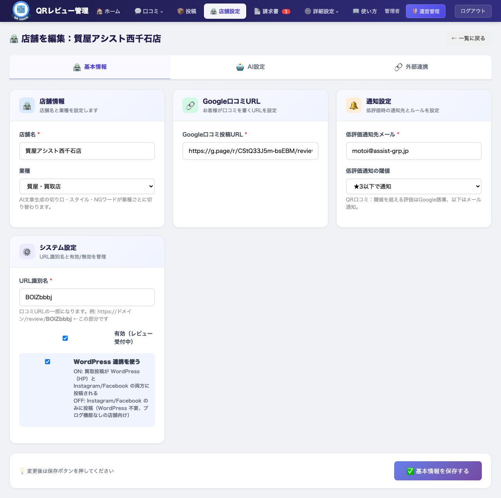
店舗の編集画面は3つのタブに分かれています。
| タブ名 | 内容 |
|---|---|
| 🏪 基本情報 | 店舗名・業種・Google口コミURL・通知先メールアドレスなど基本的な設定 |
| 🤖 AI設定 | AIの文体・追加指示・NGワード・MEOキーワードなど、AI動作のカスタマイズ（→ 5-3参照） |
| 🔗 外部連携 | Instagram・Facebook・WordPress・Googleビジネスプロフィールの連携設定（→ 第6章参照） |
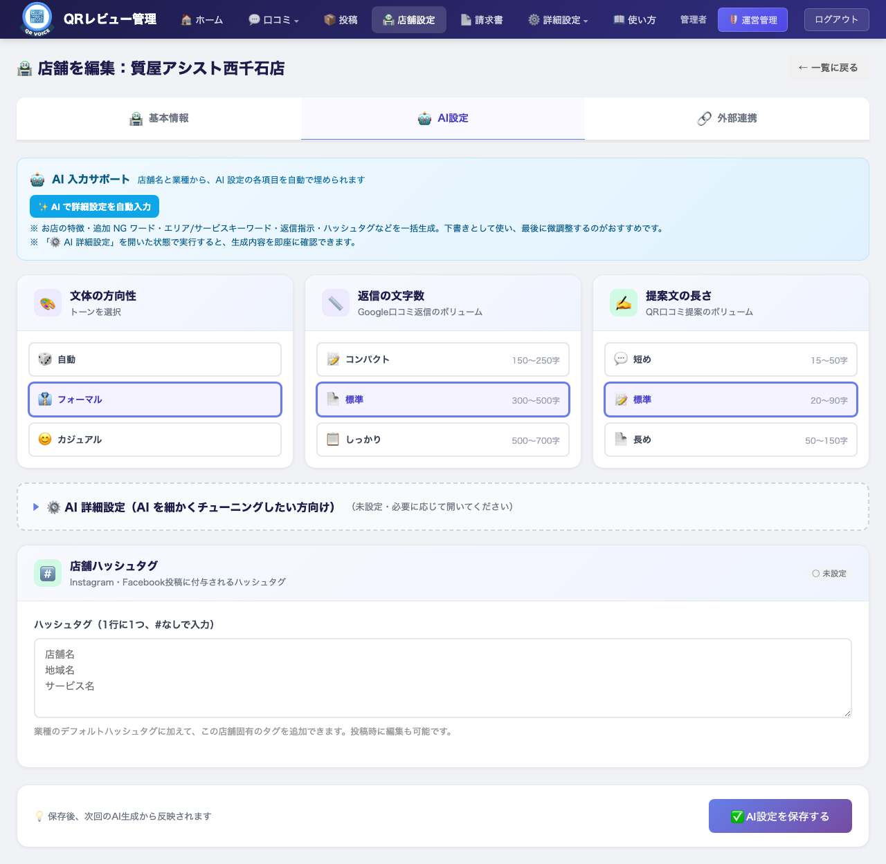
店舗ごとにAIの動作を細かく調整できます。店舗の編集画面の「🤖 AI設定」タブで以下の項目を設定してください。
| 設定項目 | 必須/任意 | 説明 |
|---|---|---|
| お店の特徴・基本方針 | 任意 |
お店独自の特徴をAIに伝える文章です。具体的に書くほどAIが的確な文章を作ります。 例：
|
| 文体の方向性 | 任意 |
AIが作成する文章のトーン（雰囲気）を選べます。
|
| 追加NGワード | 任意 |
AIが使ってはいけない言葉を追加できます。1行に1つずつ入力してください。 業種の共通NGワードに加えて、お店独自のNGワードを設定できます。 例：競合店名、特定の商品名など |
| 地名キーワード（MEO対策） | 任意 |
Google口コミへの返信文に自然に盛り込む地名キーワードです。1行に1つずつ入力してください。 Googleマップの検索順位アップ（MEO対策）に効果があります。 例：「○○市」「△△駅前」「□□通り」 |
| サービスキーワード（MEO対策） | 任意 |
Google口コミへの返信文に自然に盛り込むサービス名や商品名です。1行に1つずつ入力してください。 例：
|
| 口コミ返信の方針 | 任意 |
AIがGoogle口コミに返信する際の方針やスタイルを指定できます。 例：「必ず来店への感謝から始めてください」「紹介やクーポンの案内は含めないでください」 |
| 店舗紹介文 | 任意 |
買取エピソードの自動生成やGoogleビジネスプロフィール投稿のフッター生成時に、AIが「○○のスタッフ」のように自己紹介に使う文章です。 空欄の場合は店舗名がそのまま使われます。 例：「イタリアンレストラン ○○ のオーナーシェフ」「創業30年の老舗 ○○ のスタッフ」 |
| 口コミ返信の文字数 | 任意 |
Google口コミへのAI返信文のボリュームを3段階で調整できます。
|
| 口コミ提案文の長さ | 任意 |
QRコードからの口コミ投稿時にお客様に提案する文章の長さを3段階で調整できます。 短めにすると投稿しやすく、長めにすると詳しい口コミが集まりやすくなります。
|
店舗ごとに専用のQRコードを生成できます。これをお店に設置して、お客様に読み取ってもらいます。
https://review-navi.com/review/shibuya-honten）も確認できます。
| 業種 | おすすめの設置場所 |
|---|---|
| 飲食店 | テーブルやメニュー立て、レジ横。お会計時に「口コミにご協力ください」と声がけすると効果的です。 |
| 美容室 | 鏡の横、受付カウンター。施術後の仕上がり確認時にお渡しすると自然です。 |
| 整体院 | 受付、待合室。施術後にお声がけするのが最も効果的です。 |
| 小売店 | レジ横、商品棚、ショッパー（紙袋）に印刷。お買い上げ後にお声がけしてください。 |
| 共通 | 名刺やチラシに印刷して配布するのも有効です。QRコードの周りに「Googleで口コミを書いてください」等の文言を添えると効果的です。 |
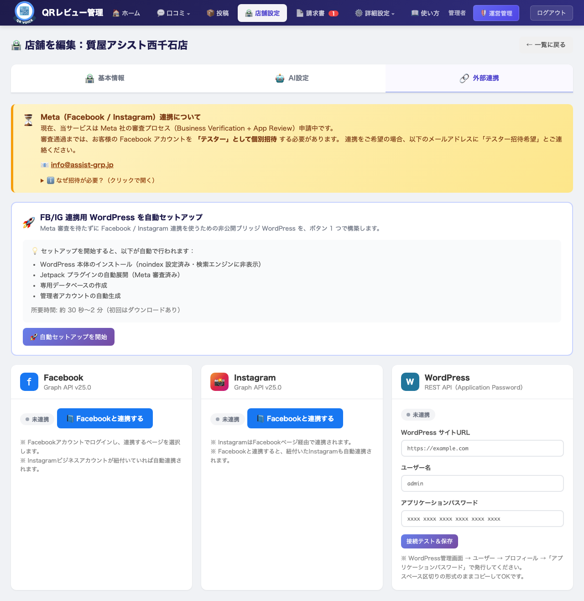
店舗ごとにInstagram・Facebook・WordPressとの連携を設定できます。
連携を設定すると、商品投稿機能で各プラットフォームへの一括配信が可能になります。
| 連携サービス | できること |
|---|---|
| ビジネスアカウントに写真＋ハッシュタグ付きの投稿ができます。 | |
| Facebookページに写真＋テキストの投稿ができます。 | |
| WordPress | WordPressサイトにブログ記事として投稿できます（カテゴリ・タグ付き）。 |
外部連携の設定画面へのアクセス方法は2通りあります。
Instagramのビジネスアカウントと連携して、投稿を自動配信できます。
Instagram連携セクションの 🗑 連携解除 ボタンをクリックすると、連携が解除されます。
解除後に再度連携したい場合は、同じ手順でトークンを設定し直してください。
Facebookページと連携して、投稿を自動配信できます。
WordPressサイトと連携して、ブログ記事として投稿できます。
https://www.example.com）上部メニューの をクリックすると、QRコード経由で集まった口コミの一覧が表示されます。
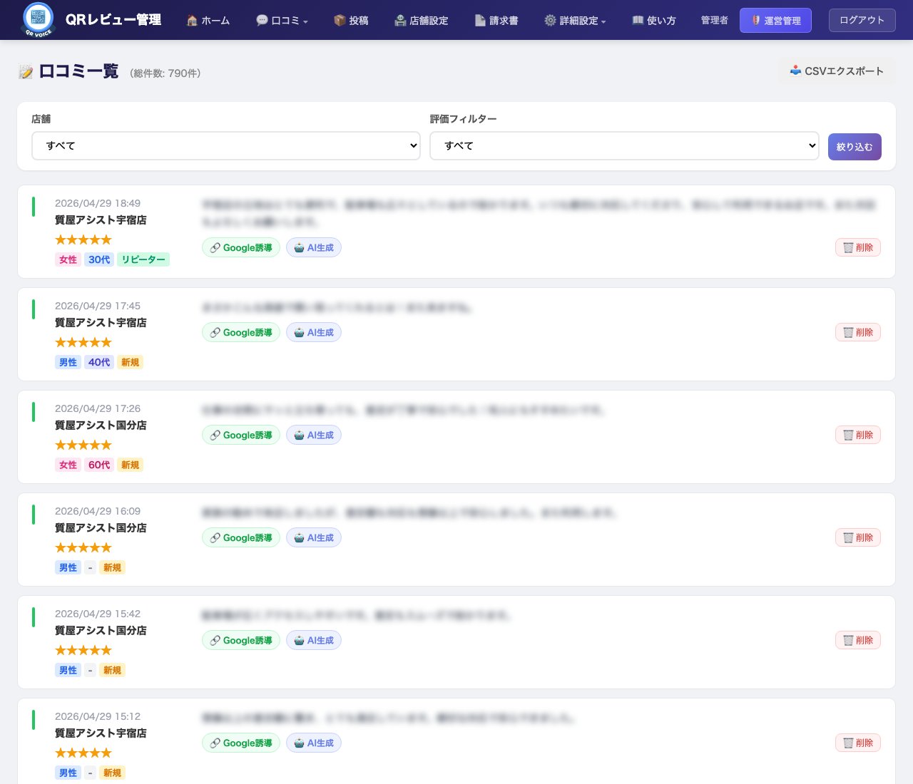
各口コミには以下の情報が表示されます。
| 項目 | 説明 |
|---|---|
| 投稿日時 | 口コミが送信された日時。 |
| 店舗名 | どの店舗に対する口コミか。 |
| 星評価 |
★1～5で表示されます。 ★1～3（赤）= 低評価、 ★4～5（緑）= 高評価 |
| お客様情報 | 性別・年代・来店タイプ（新規/リピーター）がバッジで表示されます。 |
| コメント | お客様が入力したコメントの全文。 |
| ステータス |
🔗 Google誘導：高評価でGoogleへ誘導された口コミ 📧 メール送信：低評価でメール通知された口コミ |
一覧の上部にあるフィルターで、表示する口コミを絞り込めます。
口コミデータをCSVファイルとしてダウンロードできます。Excelで開いて分析に活用できます。
reviews_20260407_120000.csv のように日時が付きます。
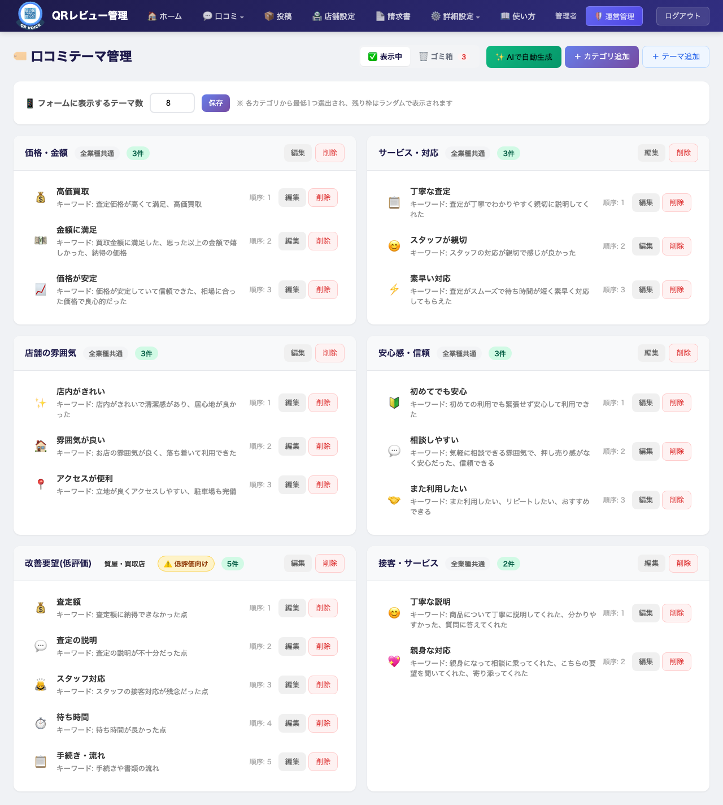
「テーマ」とは、お客様が口コミを書くときに表示される選択ボタンのことです。
たとえば飲食店なら「🍖 お肉が美味しい」「🌟 接客が丁寧」、美容室なら「✂️ カットが上手」「💆 リラックスできた」のようなボタンが並びます。
お客様がテーマボタンをタップすると、そのテーマに合わせた口コミ文がAIで自動生成されます。
「何を書けばいいかわからない」というお客様でも、簡単に口コミが書けるようになります。
テーマはカテゴリごとにグループ分けされています。
上部メニューの をクリックして設定します。
カテゴリは業種ごとに絞り込みができます。
例えば「飲食店」カテゴリと「美容室」カテゴリを分けて管理することで、各店舗に適したテーマだけを表示できます。
| 業種 | カテゴリ例 |
|---|---|
| 飲食店 | 「料理の味」「接客・サービス」「店内の雰囲気」「コスパ」 |
| 美容室 | 「カット技術」「カラー・パーマ」「接客・居心地」「ヘアケア」 |
| 整体院 | 「施術効果」「接客・対応」「院内の雰囲気」「通いやすさ」 |
| 小売店 | 「商品品揃え」「接客体験」「店舗環境」「価格・買取額」 |
| 共通 | 「接客が丁寧」「清潔感がある」「また来たい」 |
| 項目 | 入力例 | 説明 |
|---|---|---|
| アイコン | 🌟 | 絵文字1つ。お客様の画面でボタンに表示されます。 |
| ラベル | 接客が丁寧 | ボタンに表示される短い文言です。 |
| キーワード | 店員の接客が丁寧で安心できた | AIが口コミ文を作るときに参考にする文章です。 |
画面上部の「表示テーマ数」で、お客様の画面に一度に表示するテーマの数を設定できます（初期値：6個）。
テーマが多すぎるとお客様が迷うので、6～8個程度がおすすめです。
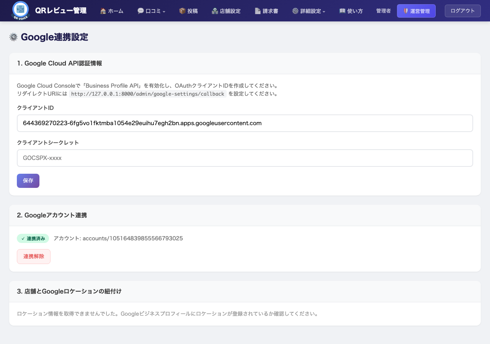
Google連携は以下の3ステップで設定します。順番に進めてください。
上部メニューの をクリックして設定画面を開きます。
https://console.cloud.google.com/ にアクセスします。
https://review-navi.com/admin/google-settings/callback
Googleアカウントと連携すると、そのアカウントで管理しているGoogleビジネスの「場所（ロケーション）」がリストで表示されます。
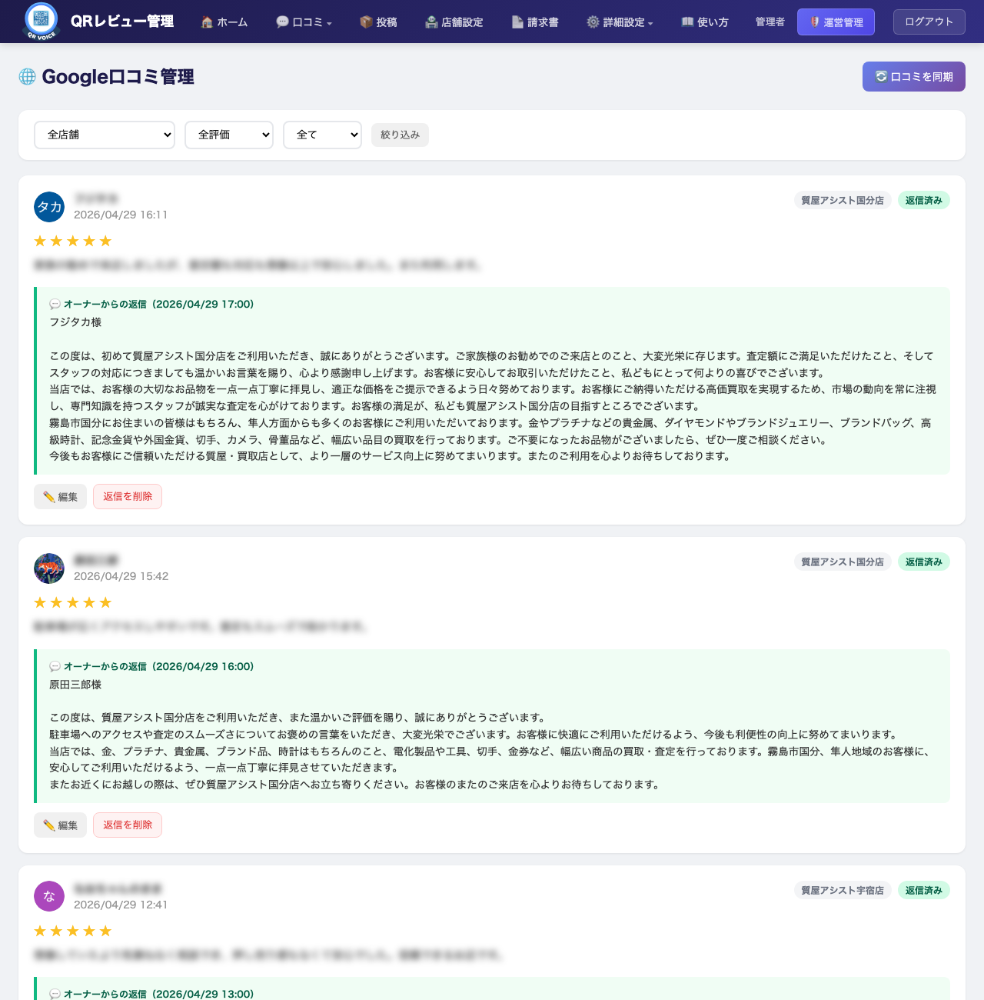
上部メニューの をクリックすると、Googleマップに投稿された口コミの管理画面が開きます。
Googleマップ上の口コミをシステムに取り込む操作です。
Googleマップの口コミに対して、お店のオーナーとして返信できます。
AIが返信文を自動作成してくれるので、手間がかかりません。
未返信の口コミが多い場合、まとめて処理できます。
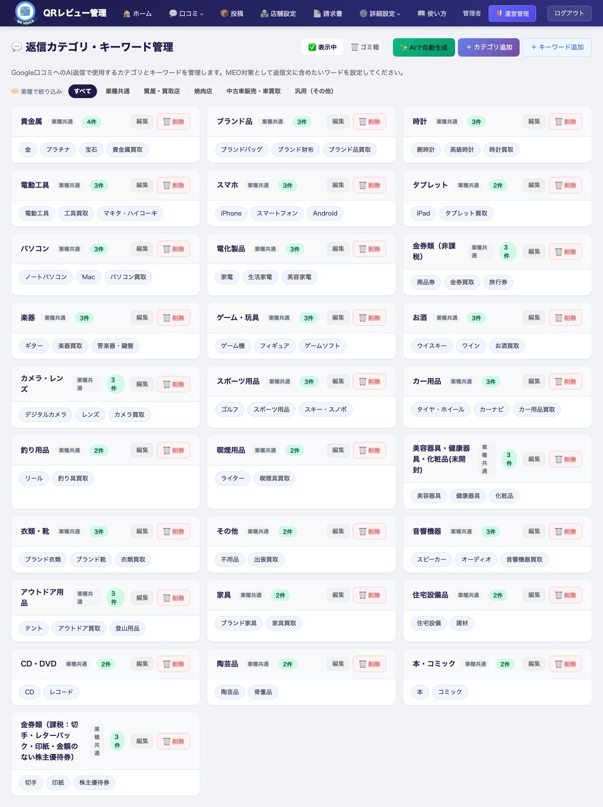
上部メニューの をクリックすると設定画面が開きます。
Google口コミに返信するとき、AIへのヒントとして使うキーワードを整理する機能です。
たとえば「お店の特徴」というカテゴリの中に、お店のアピールポイントをキーワードとして登録しておきます。
Google口コミに返信するとき、これらのキーワードを選ぶと、AIがそれに合った内容を返信文に盛り込みます。
| 業種 | カテゴリ例 | キーワード例 |
|---|---|---|
| 飲食店 | メニューの特徴 | 「A5ランク和牛」「自家製スープ」「季節限定メニュー」 |
| 美容室 | 得意メニュー | 「イルミナカラー」「ヘッドスパ」「似合わせカット」 |
| 整体院 | 施術メニュー | 「骨盤矯正」「肩こり専門」「産後ケア」 |
| 小売店 | 取扱品目 | 「高級時計」「ブランドバッグ」「ジュエリー」 |
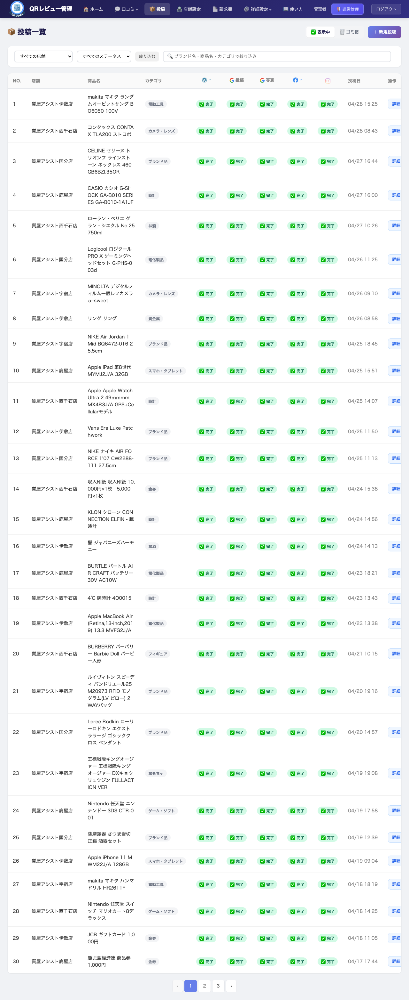
商品やサービスを、複数のプラットフォームに一括で紹介記事として投稿できる機能です。
AIが紹介文を自動作成するので、文章を考える手間が省けます。
| 配信先 | 投稿内容 |
|---|---|
| WordPress | ブログ記事として公開（カテゴリ・タグ付き） |
| Googleビジネス | 商品投稿として公開（写真付き） |
| Googleフォト | Googleビジネスに写真をアップロード |
| Facebookページに写真＋テキストで投稿 | |
| ハッシュタグ付きで画像投稿 |
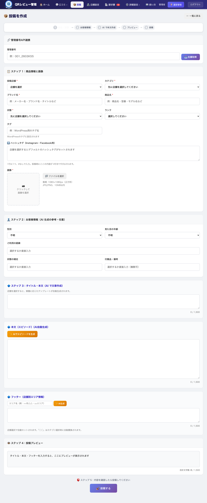
| 業種タイプ | 表示される入力項目 | タイトル生成 |
|---|---|---|
| 質屋・買取店 | ブランド名、商品名、商品の状態、付属品、お客様情報 | ブランド名＋商品名から自動生成 |
| 飲食店 | カテゴリ、お客様情報 （ブランド名・商品名・状態・付属品は非表示） |
カテゴリ名から自動生成 |
| その他の業種 | 業種管理の「投稿の非表示フィールド」設定に従います | 業種ごとのタイトルテンプレートに従います |
Instagram・Facebookへの投稿時に、ハッシュタグ（#付きキーワード）が自動で付与されます。
ハッシュタグは3つのレベルで設定でき、それぞれ異なる用途があります。
| 設定レベル | 設定場所 | 用途 |
|---|---|---|
| ① 業種 | の「デフォルトハッシュタグ」 | その業種の全店舗に共通するタグ（例：#買取 #高価買取） |
| ② 店舗 | の「店舗ハッシュタグ」 | その店舗固有のタグ（例：#店舗名 #地域名） |
| ③ 投稿 | 投稿作成フォームの「ハッシュタグ」欄 | 投稿ごとに自由に編集可能。①②の内容が初期値としてセットされます |
「店舗オーナー」は、特定の1店舗だけを管理できるアカウントです。
フランチャイズ店のオーナーや、各店舗の責任者に個別のアカウントを発行する場合に使います。
| 機能 | 管理者 | 店舗オーナー |
|---|---|---|
| 全店舗の管理 | ✅ すべての店舗 | ❌ 自分の店舗のみ |
| 口コミの確認 | ✅ | ✅ 自分の店舗のみ |
| Google口コミの返信 | ✅ | ✅ 自分の店舗のみ |
| 外部連携設定 | ✅ すべて | ✅ 自分の店舗のみ |
| 店舗の追加・削除 | ✅ | ❌ |
| 業種管理 | ✅ | ❌ |
| ユーザー管理 | ✅ | ❌ |
| 項目 | 説明 |
|---|---|
| 名前 | オーナーの名前 |
| メールアドレス | ログインに使うメールアドレス |
| パスワード | 8文字以上のパスワード |
| 権限 | 「店舗オーナー」を選択します |
| 担当店舗 | このオーナーが管理する店舗をプルダウンから選択します |
店舗オーナーは通常のログインURLからログインします。
ログイン後は店舗オーナー専用のポータル画面が表示されます（管理者の画面とは異なります）。
https://review-navi.com/admin/login にアクセスします。
/admin/...）にアクセスしようとした場合、自動的に店舗オーナーポータルにリダイレクトされます。
自分の店舗の口コミ統計（総件数、平均評価、最近の口コミなど）を確認できます。
Google口コミの未返信件数も表示されるので、返信が必要な口コミをすぐに把握できます。
上部メニューの から、自分の店舗に投稿された口コミを一覧で確認できます。
評価でのフィルタリングも可能です。
上部メニューの から、Googleマップに投稿された口コミを確認し、AIを使った返信ができます。
操作方法は管理者向け（第10章）と同じです。
上部メニューの から、Instagram・Facebook・WordPressの連携を自分で設定できます。
操作方法は管理者向け（第6章）と同じです。
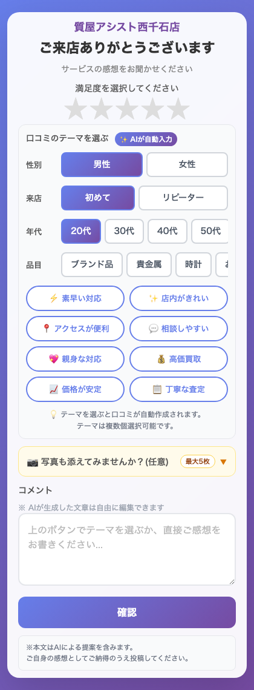
お客様がQRコードを読み取ったとき、どのような画面が表示されるかをご説明します。
この章は設定ではなく、「お客様にはこう見えている」という参考情報です。
お客様がQRコードを読み取ると、この画面がスマートフォンに表示されます。
お客様は商品・店内・お渡し品などの写真を、その場で撮影して口コミに添付できます。 iPhone の場合は 「+ 追加」ボタン → 「写真を撮る」 でカメラが起動し、撮影した写真がそのまま添付されます。
※ お客様には10件に1件くらいのペースで写真付き投稿してもらえると効果的です。スタッフや他のお客様など、個人が特定できる写真の投稿は控えるよう案内してください。
入力内容のプレビューが表示されます。
AIが作成した口コミ文とともに、「Googleでも口コミを書いてもらえませんか？」というお願い画面が表示されます。
「コピー」ボタンでAI生成文をコピーし、「Googleマップで口コミを投稿」ボタンをタップすると、Googleマップの口コミ投稿ページが開きます。
「ご意見ありがとうございます。サービス改善に活用させていただきます。」というお礼画面が表示されます。
Googleマップへの誘導は行いません。同時に、管理者にメールで通知されます。
https://maps.google.com）を開きます。https://search.google.com/local/writereview?placeid=XXXXX のような形式です。はい、どの業種でも使えます。
管理者が「業種管理」画面から新しい業種を簡単に追加できます（→ 4-2. 業種を追加する）。
既存の業種で近いものを選んで使うこともできます。
業種を選ぶと、AIが生成する口コミ文や返信文のトーンや内容がその業界に合ったものになります。
例えば飲食店なら「味」「雰囲気」に関する表現が、美容室なら「技術」「仕上がり」に関する表現が使われやすくなります。
また、業種ごとにNGワードやテーマのカテゴリを分けて管理できます。
はい、登録した店舗の数だけQRコードを作成できます。それぞれ各店舗専用のQRコードになります。
同じ店舗のQRコードを何枚印刷しても問題ありません。
QRコードは店舗のURL（スラッグ）から自動生成しています。
店舗のスラッグが変わらない限りQRコードも変わりませんので、何度ダウンロードしても同じQRコードです。
印刷物の更新が不要なのでご安心ください。
口コミが送信された直後に届きます。通常は数秒～数分以内です。
迷惑メールフォルダに振り分けられる場合がありますので、届かない場合はそちらもご確認ください。
はい、店舗の編集画面で「通知先メールアドレス」を変更できます。店舗ごとに別のアドレスを設定できます。
はい、自由に修正できます。AIが作成した文章はあくまで下書きです。
お客様は自分の言葉を付け足したり、不要な部分を削除したりできます。
お客様の名前・住所・電話番号などの個人情報は一切収集しません。
保存されるのは、星評価・コメント・性別（任意）・年代（任意）・来店タイプ（任意）のみです。
はい、いつでも設定できます。
まずはQRコードでの口コミ収集だけを始めて、Googleビジネスプロフィールの準備ができてから連携することをおすすめします。
はい、店舗数の上限はありません。店舗ごとにQRコード・通知先メール・Google連携・外部連携を個別に設定できます。
特定の1店舗だけを管理できるアカウントです。複数店舗を運営している場合に、各店舗の責任者に個別のログインアカウントを発行できます。
店舗オーナーは自分の店舗の口コミ確認・返信・外部連携設定が行えます。
→ 詳しくは第13章をご覧ください
いいえ、すべて任意です。必要なサービスだけ連携してください。
連携しなくても、QRコード口コミ収集やGoogle口コミ管理は通常通り使えます。
→ 設定方法は第6章をご覧ください
Instagram・Facebookなどの外部サービスと連携するための「鍵」のようなものです。
各サービスの開発者向け画面（Meta for Developersなど）で取得できます。
以下をお試しください。
はい、保存した瞬間から反映されます。お客様が次にQRコードを読み取ったときから、新しいテーマが表示されます。
管理画面はパソコン専用です。スマートフォンからのご利用には対応しておりません。
パソコンのブラウザ（Google Chrome推奨）からアクセスしてください。
Google Chrome（最新版）を推奨しています。
Microsoft Edge、Safari でも基本的に動作しますが、表示が崩れる場合があります。
QRコード口コミ支援システム 操作マニュアル
© QRコード口コミ支援システム
最終更新：2026年4月 ｜ バージョン 3.0